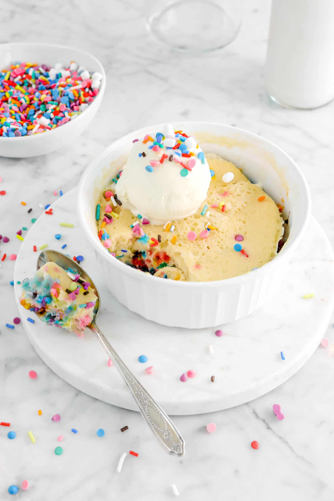

Funfetti Mug Cake

Description
This is a short 5 minute recipe for a funfetti mug cake.
Ingredients
- One large egg
- 2 tablespoons of Vegetable Oil
- 3 tablespoons of Whole Milk
- 1/2 teaspoons of Vanilla Extract
- 1/4 cup of All-purpose Flour
- 1 1/2 tablespoons of Sugar
- 1/4 teaspoon Baking Powder
- 1/8 teaspoon Salt
- 1 1/2 tablespoons of Sprinkles
Steps
- To start, in a large, microwave-safe mug, whisk together one egg, vegetable oil, milk, and vanilla.
- Then, whisk in your flour, sugar, baking powder, and salt.
- Afterwards, stir in your sprinkles.
- Be sure to microwave your mug cake on full power for 1 minute, or until your cake tests done.
- Serve and enjoy!
Home Page